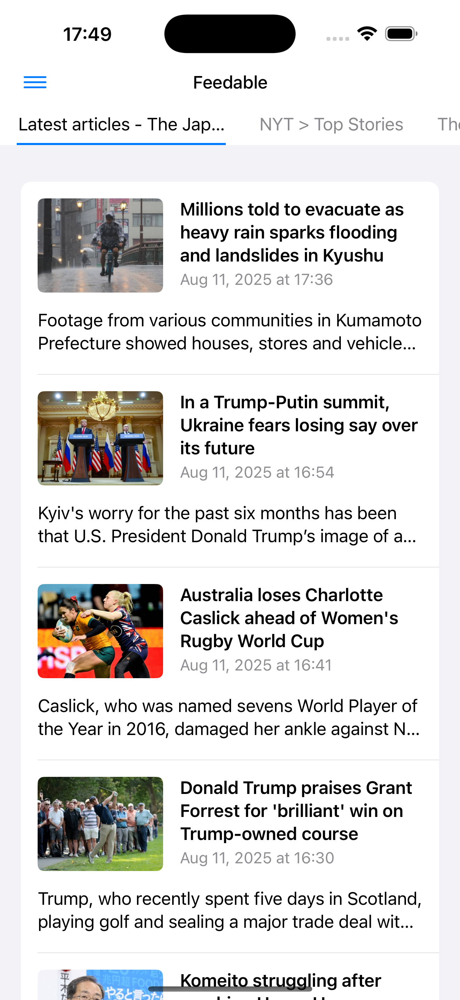
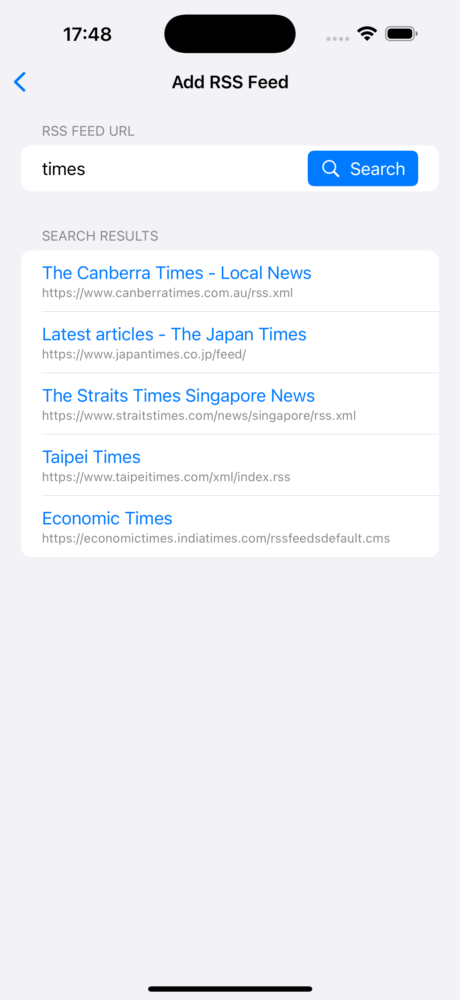

üìú Table of Contents
üì± Overview
This app lets you easily register multiple RSS or Atom feeds, browse articles in a clean interface, and switch between original and simplified viewing modes for a better reading experience. It is designed with performance, accessibility, and usability in mind.

✨ Main Features
Feed Management
- Register up to 30 RSS or Atom feeds
- Add feeds by entering a URL or by searching with keywords
- Sort, rename, or delete registered feeds
Feed Search
- Search the cloud database for feeds by keyword
- Suggests up to 5 relevant feeds based on title matching

Article List
- Displays article title, publication date, description, and thumbnail
- Automatically extracts thumbnails from content if missing in the feed
- Swipe between different feed tabs
Article View
- Original View – shows the full webpage
- Simple View – extracts main content for distraction-free reading
- Simple View hides ads, sidebars, headers, and other non-essential elements
❓ Frequently Asked Questions (FAQ)
How do I add a new feed?
- Tap the Add Feed button on the Feed List screen.
- Enter a valid feed URL or a keyword.
- If entering a URL, the app will verify it’s a valid RSS/Atom feed.
- If entering a keyword, suggestions will appear from the database.
What is the maximum number of feeds I can add?
You can register up to 30 feeds.
What’s the difference between Original View and Simple View?
- Original View shows the exact webpage as published.
- Simple View extracts only the main article content for easier reading.
Does the app support multiple languages?
Yes. The app supports English (default) and Japanese. The language will automatically match your device settings.